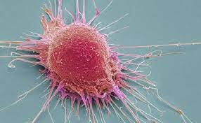

Salut Sarrià S.L. (NOTICIES)
És el càncer una enfermetat curable?
Alguns casos de càncer són més propens a ser curables que altres. Però cada cas requereix ser abordat i sotmès a tractament de manera particular. No hi ha cap cura que es pugui considerar l'única contra el càncer.
Comparació entr 'cura' y 'remisió'
Una cura significa que el càncer ha desaparegut amb el tractament i que no es requereix de tractament addicional unit que no es té l'expectativa que el càncer hagi de tornar. És poc comú que un metge pugui assegurar que el càncer mai no tornarà. En la majoria dels casos pren temps poder determinar si el càncer podria tornar. No obstant això, com més temps una s'hagi lliurat i es mantingui lliure d'un càncer, més gran és la probabilitat que el càncer no tornarà. Més sovint, quan el tractament aparenta haver estat exitós, els metges declararan que el pacient “està en remissió”, més que dir que el pacient s'ha “curat”.
La remissió és un període de temps en què el càncer respon al tractament o està controlat. Algunes persones consideren que la remissió significa que la persona s'ha curat del càncer, però potser aquest no és el cas.
Relevància
Ja sigui que el càncer d'una persona pugui ser curable o no dependrà del tipus i l'etapa del càncer, així com del tipus de tractament que correspongui aplicar-se, entre altres factors.
Disseny de l'estudi
La remissió és un període de temps en què el càncer respon al tractament o està controlat. Algunes persones consideren que la remissió significa que la persona s'ha curat del càncer, però potser aquest no és el cas.
- En un estat de remissió completa, tots els signes i símptomes del càncer desapareixen i no es detecten cèl·lules canceroses mitjançant les diverses proves per a la detecció.
- En un estat de remissió parcial, el càncer o tumor pel càncer s'encongeix, però desapareix del tot.
10 May 2022 @ 10:28 AM | 0 Comment(s) | Posted by webmasterneo
Observacions
Poc a poc la tecnologia va avançant i gràcies a això es poden fer avanços mèdics en aquest àmbit.
10 May 2022 @ 10:34 AM | 0 Comment(s) | Posted by webmasterneo